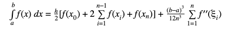
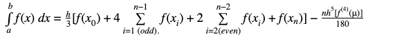
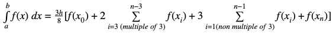

Method that finds the value of a definite integral by subdividing the interval [a.b] into n subintervals of equal size and applying to each of these the trapezium rule, and thus obtaining the result by adding the result of each subinterval using: 
Method that uses n + 1 points with n pair, which subdivide the interval evenly and by which the function is approximated using Lagrange quadratic polynomial, and once the corresponding values of x and y are obtained, the result is approximated with: 
Method that uses n + 1 points with n multiple of 3, which subdivides the interval evenly and by which the function is approximated using the Lagrange cubic polynomial, and once the corresponding values of x and y are obtained, the result is approximates with: 
Result: {{result}}